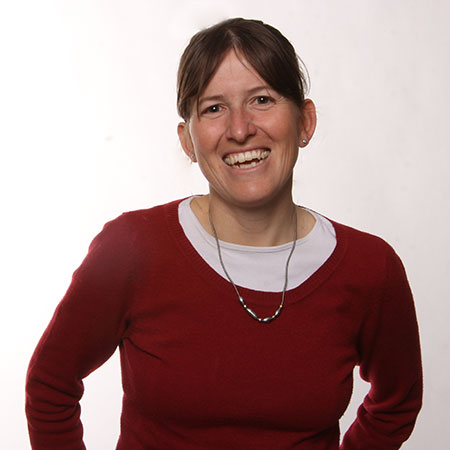
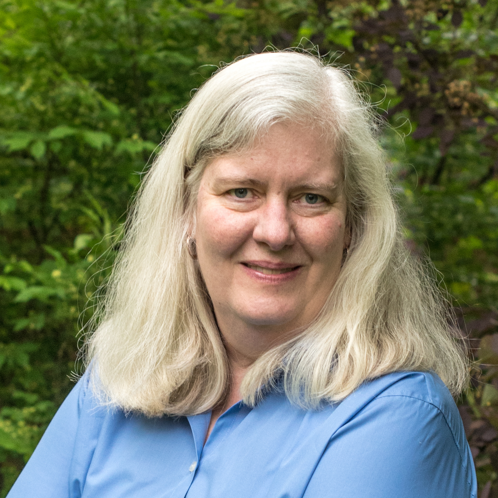
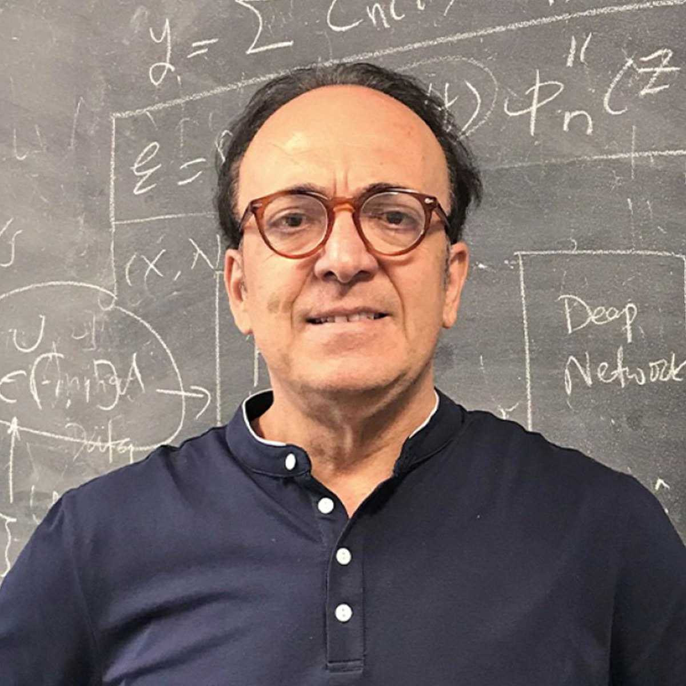
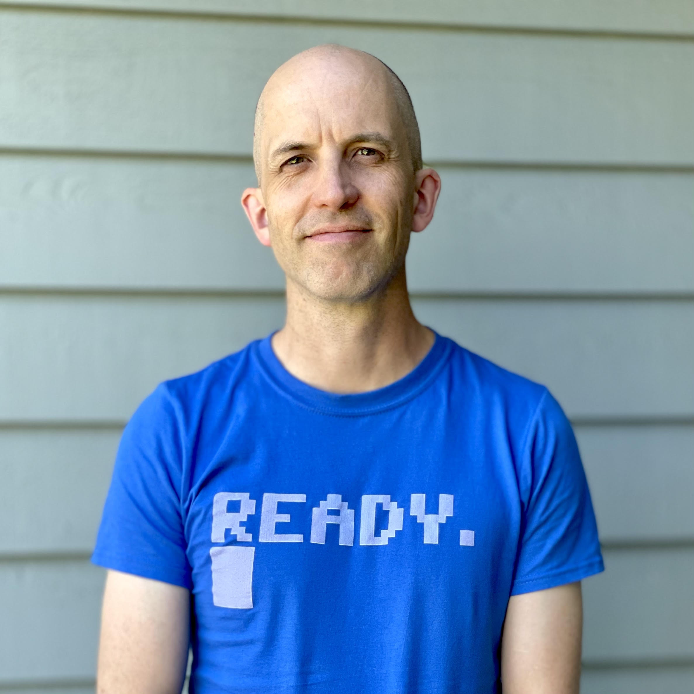
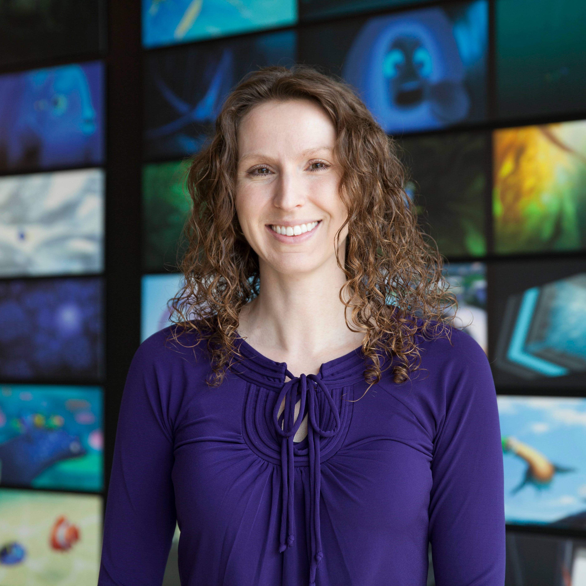
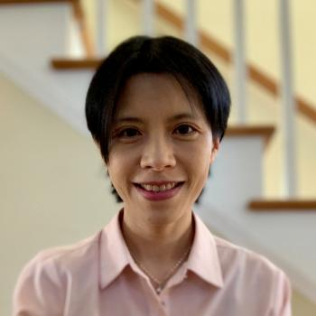
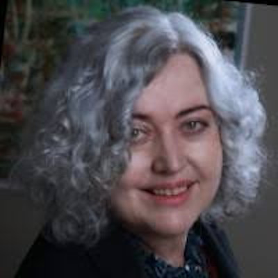
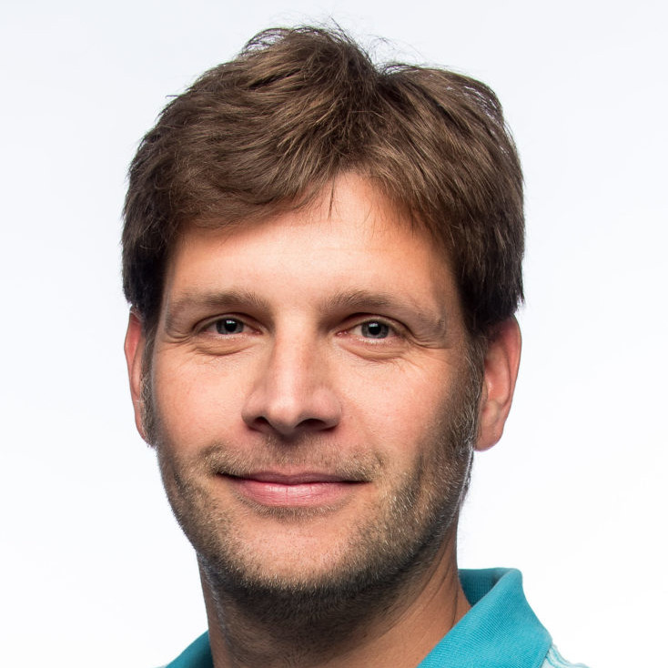

Program
SCA will be held online between September 7 and September 10, 2021. Despite the limitations of a virtual venue we put together for you an unforgettable program with exciting keynote speakers, a panel, and, last but not least, a high quality poster and paper program highlighting the latest research trends and results in the field.
Registration is now open--please fill out this form to register for the conference and receive updates including links to the virtual conference platforms.
A YouTube playlist of recordings of the conference sessions (so far) is available here.
All event times on the program are in Eastern Daylight Time (EDT). A Google calendar of the conference program is available (which will update dynamically with any changes to the program).
Online Conference Schedule
13 EDT = 17 GMT = 19 CEST = 01 CST = 10 PDT
Keynote - Katia Bertoldi
Multistable Inflatable Origami—From Deployable Structures to Robots
Multistable structures can reversibly change between multiple stable configurations when a sufficient energetic input is provided. While originally the field focused on understanding what governs the snapping, more recently it has been shown that these systems also provide a powerful platform to design a wide range of smart structures. In this talk, I will first show that pressure-deployable origami structures characterized by two stable configurations provide opportunities for a new generation of large-scale inflatable structures that lock in place after deployment and provide a robust enclosure through their rigid faces. Then, I will demonstrate that the bistable origami modules provide an ideal platform to design actuators that can switch between different configurations, reach multiple, pre-defined targets in space, and move along complex trajectories. Unlike previously proposed robots that require complex input control of multiple actuators, a single input signal suffices to activate our robot, as all features required for functionality are embedded into the architecture of the building blocks.
Katia Bertoldi is the William and Ami Kuan Danoff Professor of Applied Mechanics at the Harvard John A.Paulson School of Engineering and Applied Sciences. She earned master degrees from Trento University (Italy) in 2002 and from Chalmers University of Technology (Sweden) in 2003, majoring in Structural Engineering Mechanics. Upon earning a Ph.D. degree in Mechanics of Materials and Structures from Trento University, in 2006, Katia joined as a PostDoc the group of Mary Boyce at MIT. In 2008 she moved to the University of Twente (the Netherlands) where she was an Assistant Professor in the faculty of Engineering Technology. In January 2010 Katia joined the School of Engineering and Applied Sciences at Harvard University and established a group studying the mechanics of materials and structures. She is the recipient of the NSF Career Award 2011 and of the ASME's 2014 Hughes Young Investigator Award. She serves as an Associate Editor for the journal Extreme Mechanics Letters. She published over 120 peer-reviewed papers and several patents.
Dr Bertoldi’s research contributes to the design of materials with a carefully designed meso- structure that leads to novel effective behavior at the macroscale. She investigates both mechanical and acoustic properties of such structured materials, with a particular focus on harnessing instabilities and strong geometric non-linearities to generate new modes of functionality. Since the properties of the designed architected materials are primarily governed by the geometry of the structure (as opposed to constitutive ingredients at the material level), the principles she discovers are universal and can be applied to systems over a wide range of length scales.
Keynote - Jessica Hodgins
Learning Control for Human Motion
Jessica Hodgins is currently the Allen Newell University Professor in the Robotics Institute and Computer Science Department at Carnegie Mellon University. From 2008-2017, she was also VP of Research at Disney Research, running research labs in Pittsburgh and Los Angeles. Since 2018, she has been the founding lead for a new AI Research lab for Facebook based in Pittsburgh. Prior to moving to Carnegie Mellon in 2000, she was an Associate Professor and Assistant Dean in the College of Computing at Georgia Institute of Technology. She received her Ph.D. in Computer Science from Carnegie Mellon University in 1989. Her research focuses on computer graphics, animation, and robotics with an emphasis on generating and analyzing human motion. She has received a NSF Young Investigator Award, a Packard Fellowship, and a Sloan Fellowship. She was editor-in-chief of ACM Transactions on Graphics from 2000-2002 and ACM SIGGRAPH Papers Chair in 2003. She served as ACM SIGGRAPH President from 2018-2020. In 2010, she was awarded the ACM SIGGRAPH Computer Graphics Achievement Award and in 2017, she was awarded the ACM SIGGRAPH Coons Award, the highest technical honor in computer graphics. In 2020, she was inducted as an University Professor at Carnegie Mellon University.
Keynote - George Karniadakis
Physics-Informed Learning for Realistic Simulations
We will review Physics-informed neural network (PINNs) and demonstrate many applications from physical and biological systems that cannot be simulated with conventional numerical methods. We will also introduce new NNs that learn functionals and nonlinear operators from functions and corresponding responses for system identification. The universal approximation theorem of operators is suggestive of the potential of NNs in learning from scattered data any continuous operator or complex system. We first generalize the theorem to deep neural networks, and subsequently we apply it to design a new composite NN with small generalization error, the deep operator network (DeepONet), consisting of a NN for encoding the discrete input function space (branch net) and another NN for encoding the domain of the output functions (trunk net). We demonstrate that DeepONet can learn various explicit operators, e.g., integrals, Laplace transforms and fractional Laplacians, as well as implicit operators that represent deterministic and stochastic differential equations. More generally, DeepOnet can learn multiscale operators spanning across many scales and trained by diverse sources of data simultaneously.
George Karniadakis is from Crete. He received his S.M. and Ph.D. from Massachusetts Institute of Technology (1984/87). He was appointed Lecturer in the Department of Mechanical Engineering at MIT and subsequently he joined the Center for Turbulence Research at Stanford / NASA Ames. He joined Princeton University as Assistant Professor in the Department of Mechanical and Aerospace Engineering and as Associate Faculty in the Program of Applied and Computational Mathematics. He was a Visiting Professor at Caltech in 1993 in the Aeronautics Department and joined Brown University as Associate Professor of Applied Mathematics in the Center for Fluid Mechanics in 1994. After becoming a full professor in 1996, he continued to be a Visiting Professor and Senior Lecturer of Ocean/Mechanical Engineering at MIT. He is an AAAS Fellow (2018-), Fellow of the Society for Industrial and Applied Mathematics (SIAM, 2010-), Fellow of the American Physical Society (APS, 2004-), Fellow of the American Society of Mechanical Engineers (ASME, 2003-) and Associate Fellow of the American Institute of Aeronautics and Astronautics (AIAA, 2006-). He received the SIAM/ACM Prize on Computational Science & Engineering (2021), the Alexander von Humboldt award in 2017, the SIAM Ralf E Kleinman award (2015), the J. Tinsley Oden Medal (2013), and the CFD award (2007) by the US Association in Computational Mechanics. His h-index is 113 and he has been cited over 60,000 times.
Keynote - Robert Bridson
Industrial Research: What I Do For Bifrost
Many years ago, I began a transition from research in academia to research for production, both at studios such as Double Negative and Weta Digital, as well as software companies providing tools to various studios, bringing me to my current position at Autodesk in the Bifrost project. Today I will talk both at a high level what it’s like to be doing numerical research so closely tied to applications and how that can succeed both actively (proposing new directions and new algorithms in response to user needs) and reactively (discovering novel problems in the real-world and solving them). I’ll work through some interesting as-yet-unpublished tidbits that have come up along the way, from procedural building blocks to numerical issues in fluid simulation.
Robert Bridson has worked at Autodesk since 2013 as the research lead for the Bifrost project, bringing next generation simulation and high performance visual programming together for artists. Before that he has been an Associate Professor in Computer Science at the University of British Columbia, co-founder of Exotic Matter, the company behind the Naiad fluid solver, and a visiting researcher at Weta Digital. Awards include a 2015 Technical Achievement Award from the Academy for his early work on sparse voxel data structures and the 2018 Symposium on Geometry Processing Software Award with his student Tyson Brochu for the El Topo mesh tracking library. Other algorithm credits, which have shown up in many films and beyond, include FLIP adapted to incompressible fluids, curl-noise, liquid viscosity, and robust cloth collisions. His book on fluid simulation is a popular resource for graphics.
Panel
Panel on Grand Challenges
Friday 14:00–15:00 EDT
Join our panelists for a discussion on grand challenges in computer animation by leaders from academia and industry.
- Moderator: Doug James, Stanford University
- Magdiela Hermida Duhamel, LatinX in Animation
- Hayley Iben, Pixar Animation Studios
- Michael Kass, Nvidia
- Karen C. Liu, Stanford University
- Carol O'Sullivan, Trinity College Dublin
- Jovan Popović, Adobe Research
Meet the Panelists
Moderator Doug L. James is a Full Professor of Computer Science at Stanford University (since June 2015), and a member of Stanford's Center for Computer Research in Music and Acoustics (CCRMA) and the Institute for Computational and Mathematical Engineering (ICME). He holds three degrees in applied mathematics, including a Ph.D. in 2001 from the University of British Columbia. In 2002 he joined the School of Computer Science at Carnegie Mellon University as an Assistant Professor, and later became an Associate Professor of Computer Science at Cornell University (2006-2015). His research interests include computer graphics, computer sound, physically based modeling and animation, and reduced-order physics models. Doug is a recipient of a National Science Foundation CAREER award, and a fellow of both the Alfred P. Sloan Foundation and the Guggenheim Foundation. He received the ACM SIGGRAPH 2021 Computer Graphics Achievement Award, a 2012 Technical Achievement Award from The Academy of Motion Picture Arts and Sciences for "Wavelet Turbulence," and the 2013 Katayanagi Emerging Leadership Prize from Carnegie Mellon University and Tokyo University of Technology. He was the Technical Papers Program Chair of ACM SIGGRAPH 2015, and a consulting Senior Research Scientist at Pixar Animation Studios from 2015-2020.
Magdiela Hermida Duhamel is an animation professional with production experience from page to post and everything in between. Throughout her career at various studios (FX Networks, DreamWorks Animation, Marvel Studios, Warner Brothers Animation, FOX,) she has contributed to multiple projects that include “Trollhunters: Tales of Arcadia”, “Uglydolls” and Marvel Studio’s first animated series, “What If…?”. She is currently the Production Manager for Nickelodeon’s The Casagrandes. Magdiela champions and advocates for diversity both in front and behind the camera and her true passion is helping open doors into the industry for underrepresented groups. To help achieve this goal, Magdiela founded LatinX in Animation, a non-profit organization under the Latino Film Institute created to build a community for Latinx professionals that work in different roles throughout Animation, VFX, and Gaming industries. She currently serves as its Co-Director.

Hayley Iben is a Director of Engineering in the Software R&D department at Pixar Animation Studios. Her teams are responsible for creating and supporting the software used by much of the film production departments at the studio. Prior to undertaking this role in 2020, Hayley led the simulation engineering team for seven years of her fifteen years at the studio. Her team was responsible for character simulation technologies, including cloth, hair, flesh, and skin. For the past decade, Hayley had also developed the studio’s hair technology, Taz, that debuted in Pixar’s Academy Award®-winning film “Brave” and quickly became Pixar's de facto hair simulation system. With seventeen film credits, her work has also appeared in films such as Pixar’s “Inside Out,” “The Good Dinosaur,” “Finding Dory,” “Coco,” “Incredibles 2,” “Toy Story 4,” “Onward,” “Soul,” and “Luca”. In February 2021, Hayley and collaborators were honored by the Academy of Motion Picture Arts and Sciences with a Technical Achievement Award for their work on Pixar’s Taz Hair Simulation System.
In her earlier career at the studio, Hayley also contributed to the Academy Award®-winning Presto Animation System, building tools for character articulation and animation with a focus on inverse kinematics and mathematical techniques. Hayley earned a B.S. in computer science from Duquesne University, and a M.S. and Ph.D. in computer science with an emphasis in computer graphics from the University of California, Berkeley.
Michael Kass is a senior distinguished engineer at NVIDIA and the overall software architect of NVIDIA Omniverse, NVIDIA's platform and pipeline for collaborative 3D content creation based on USD. Michael is an ACM Fellow, received a Scientific and Technical Academy Award in 2005 and the SIGGRAPH Computer Graphics Achievement Award in 2009. He was inducted into the SIGGRAPH Academy in 2018. He holds 29 issued U.S. patents, and was honored in 2018 as Inventor of the Year by the NY Intellectual Property Law Association.

C. Karen Liu is an associate professor in the Computer Science Department at Stanford University. Prior to joining Stanford, Liu was a faculty member at the School of Interactive Computing at Georgia Tech. She received her Ph.D. degree in Computer Science from the University of Washington. Liu's research interests are in computer graphics and robotics, including physics-based animation, character animation, optimal control, reinforcement learning, and computational biomechanics. She developed computational approaches to modeling realistic and natural human movements, learning complex control policies for humanoids and assistive robots, and advancing fundamental numerical simulation and optimal control algorithms. The algorithms and software developed in her lab have fostered interdisciplinary collaboration with researchers in robotics, computer graphics, mechanical engineering, biomechanics, neuroscience, and biology. Liu received a National Science Foundation CAREER Award, an Alfred P. Sloan Fellowship, and was named Young Innovators Under 35 by Technology Review. In 2012, Liu received the ACM SIGGRAPH Significant New Researcher Award for her contribution in the field of computer graphics.

Carol O’Sullivan is the Professor of Visual Computing in Trinity College Dublin. From 2013-2016 she was a Senior Research Scientist at Disney Research in Los Angeles, and spent a sabbatical year as Visiting Professor in Seoul National University from 2012-2013. Her research interests include Graphics and Perception, Computer Animation, Crowd and Human simulation. She served as Editor in Chief for the ACM Transactions on Applied Perception from 2006-2012 and she organized Eurographics’2005 in Dublin, among others. She is the Technical Papers Chair for ACM SIGGRAPH Asia 2021. She was elected a fellow of Trinity College in 2003 and of Eurographics in 2007.

Jovan Popović joined Adobe in 2008 as an established researcher in computer animation. In his first year, he published five SIGGRAPH papers, one of the most visible computer-science journals. His publications helped establish fundamental technologies for analysis and synthesis of human motion including faces, bodies, and hands. Adobe Character Animator is, in part, a culmination Jovan’s research, and an embodiment of his research in tracking, animation, and simulation. Prior to Adobe, he was an Associate Professor at the Massachusetts Institute of Technology. Today, he is recognized as an Adobe Fellow, our highest technical distinction. His research interests span the areas of graphics, vision, and learning.
Awards Ceremony
Starting for the first time this year, the SCA conference will be recognizing the work and achievements of early career researchers. Minchen Li will receive the 2021 SCA Doctoral Dissertation Award; Vinicius C. Azevedo will receive the 2021 SCA Early Career Researcher Award. Refer to the Awards page for their full award citations.
The award for Best Paper will also be presented at this time. Join us in congratulating the winners!
Posters
Join the authors of this year's poster submissions at the poster session during SCA After Hours on Wednesday, September 8, 17:00 EDT.